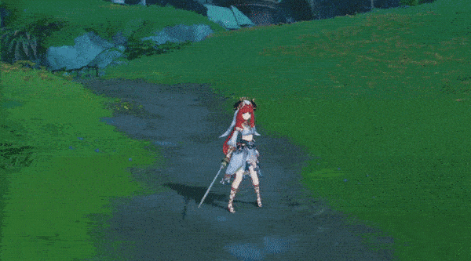
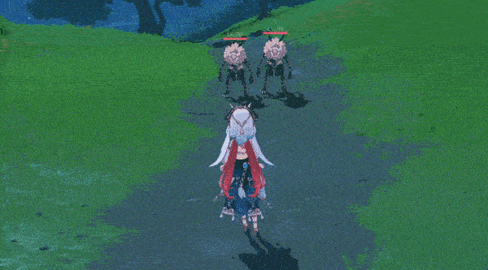
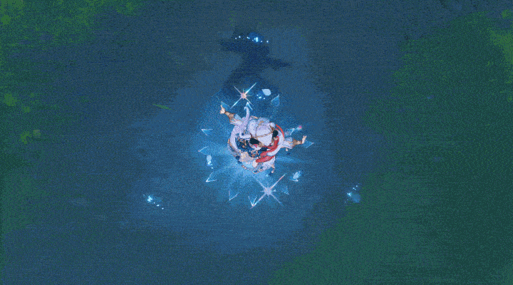

妮露 - 战斗天赋
普通攻击·弦月舞步
普通攻击
进行至多三段的连续剑击。
重击
消耗一定体力，进行一次旋转斩击。
下落攻击
从空中下坠冲击地面，攻击下落路径上的敌人，并在落地时造成范围伤害。

七域舞步
展开「翩转」状态，基于妮露的生命值上限，对身边的敌人造成水元素伤害。
在翩转状态下，妮露在进行普通攻击或施放元素战技时，将转为分别进行「剑舞步」与「旋舞步」，造成的伤害转为无法被附魔覆盖、视为元素战技伤害的水元素伤害。
在这种状态下，妮露的第三段舞步将移除翩转状态，并依据第三段舞步的类型分别产生如下效果：
剑舞步：释放一道水月，对触及的敌人造成水元素伤害，并为妮露赋予祷月状态。在此状态下她进行普通攻击时，将转为进行剑舞步，并在进行最后一击时释放水月；
旋舞步：施展一道涤空水轮，造成水元素范围伤害，并产生会跟随自己的当前场上角色行动的净天水环，持续为其中的敌人施加潮湿状态。
在翩转或祷月状态下时，妮露无法进行重击；这些状态将会在妮露退场时解除。
「她纤巧的足尖轻轻点过水面，摇漾的涟光宛如七天的流绚。」

 浮莲舞步·远梦聆泉
浮莲舞步·远梦聆泉
进行远梦聆泉之舞，绽开遥水莲华，基于妮露的生命值上限，造成水元素范围伤害，并为命中的敌人施加「永世流沔」状态。
短暂间隔后，处于永世流沔状态下的敌人将受到水元素伤害。
「纵然我们不曾将那遥远的梦目睹，唯有这支舞，仍将似梦的遐景摹录。」
